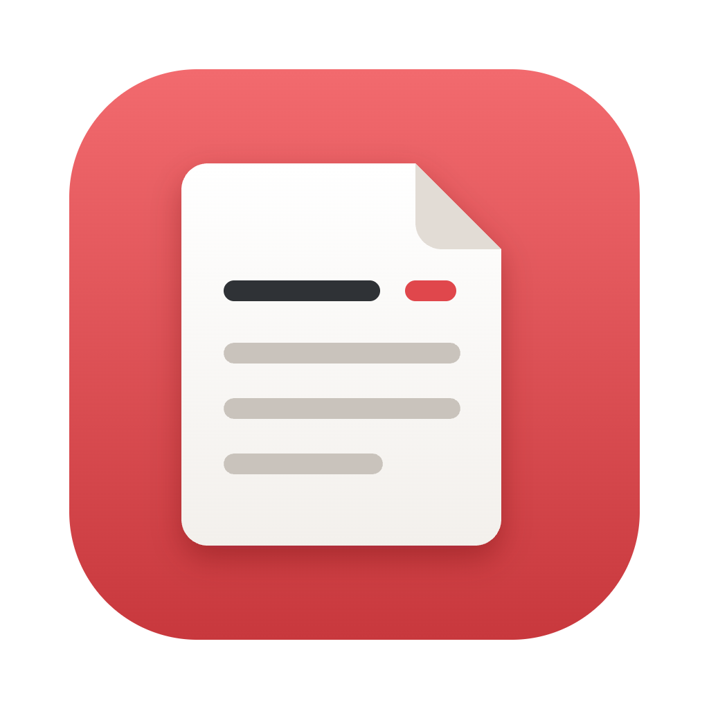

Apuntes
Elige una nota de la lista o crea una nueva.

Elige una nota de la lista o crea una nueva.
Tus notas son archivos Markdown en una carpeta. Ponla en Dropbox y estarán sincronizadas en Mac, Windows y Linux.
¿Ya usas Obsidian? Elige la carpeta de tu bóveda: Apuntes lee las mismas notas.